Токио, столица Японии, ошеломляет туристов буквально с первых мгновений, как только нога путешественника ступает на его землю. Кажется, здесь всё не так, как в других городах: и невероятно сложная планировка кварталов, и запутанные линии метро, которые воспринимаются как не связанные друг с другом, и сплошные джунгли из проводов городских коммуникаций. В часы пик люди словно сливаются в одну реку, и ее потоки заполняют собой улицы, подземные переходы, общественный транспорт. Здесь нужно всегда держать ухо востро, ведь очень легко заблудиться, попав совсем не туда, где вы желали оказаться.
Токио является вторым в мире по плотности населения. 37-миллионный город – это не только политический, административный и финансовый, но также промышленный и культурный центр страны. Расположенный в юго-восточной части крупнейшего японского острова Хонсю, этот ультрасовременный мегаполис, жизнь в котором не утихает ни днем, ни ночью, расположился на равнине Канто, в уютной бухте Токийского залива. Чтобы по-настоящему проникнуться его удивительной атмосферой и познакомиться хотя бы с половиной достопримечательностей, не хватит одного дня и даже недели – здесь нужно прожить несколько месяцев.
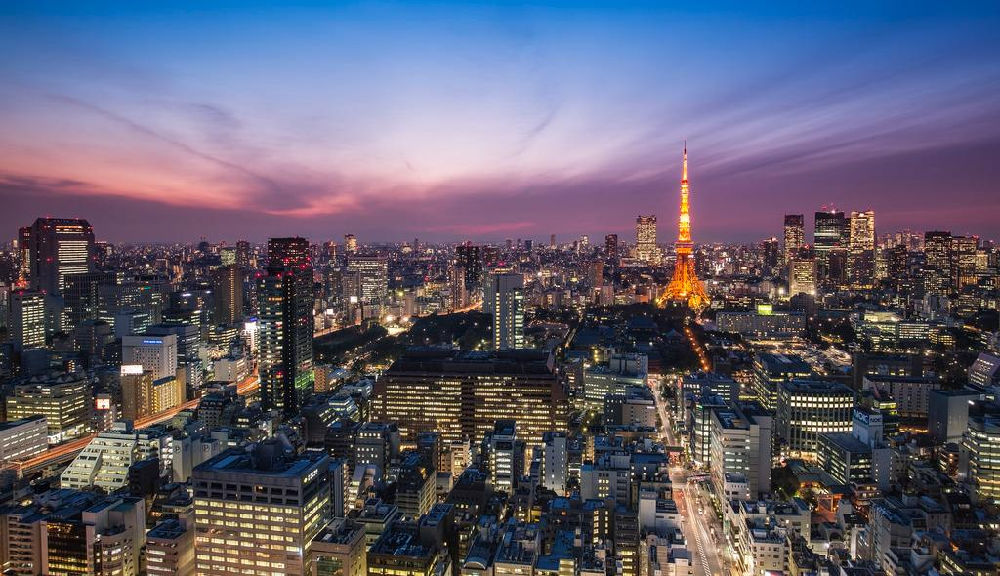
Огромный и многоликий Токио, столица единственной в мире империи, да еще и островной – Японии, невозможно описать в нескольких словах или ограничиться по отношению к нему лишь парой эпитетов, пусть даже самых красноречивых. И всё потому, что в этом древнем городе гармонично сосуществуют, взаимно проникая друг в друга, современность и старинные японские традиции. О Старом городе стоит сказать отдельно. Посетив его многочисленные дворцы, храмы и святыни, словно окунаешься в эпоху сёгунов, которые долгое время были единовластными правителями Страны восходящего солнца. Любители искусства утолят свою жажду к прекрасному в многочисленных токийских музеях.
В Токио находятся старейшие университеты – Токийский, Васэда, Кэйо, Хосэй и другие. В городе несколько сотен картинных галерей и несколько десятков государственных и частных музеев. В Токийском национальном музее хранится 85 000 произведений искусства, живописи, скульптуры.
Токио еще известен как рай для шоппинга, в котором можно купить буквально всё, начиная от самых крутых гаджетов и других технических новинок и заканчивая модной одеждой и симпатичными японскими сувенирами. Ну, а молодежь, конечно, с головой окунается в ночную жизнь города. Модные кафе и рестораны, дискотеки и ночные клубы. Любители же вкусно поесть, и не только из числа молодежи, с удовольствием проводят время в местных заведениях питания, лакомясь знаменитыми суши и другими блюдами национальной японской кухни.
В последние годы Токио вошел в число крупнейших мировых финансовых центров. По объему финансовых операций Токийская фондовая биржа сравнима со знаменитыми фондовыми биржами Нью-Йорка и Лондона.
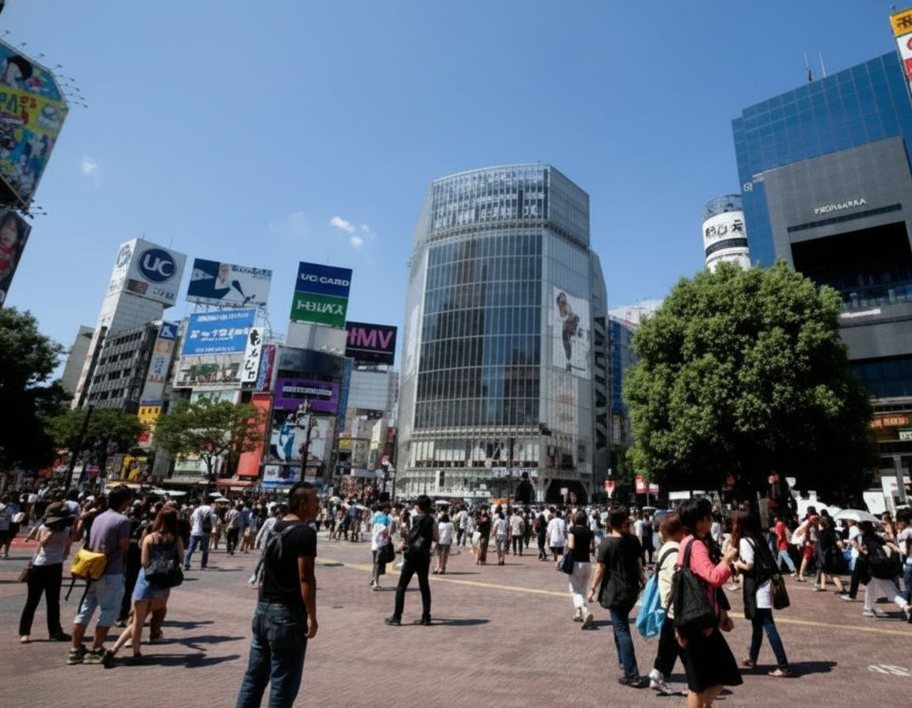
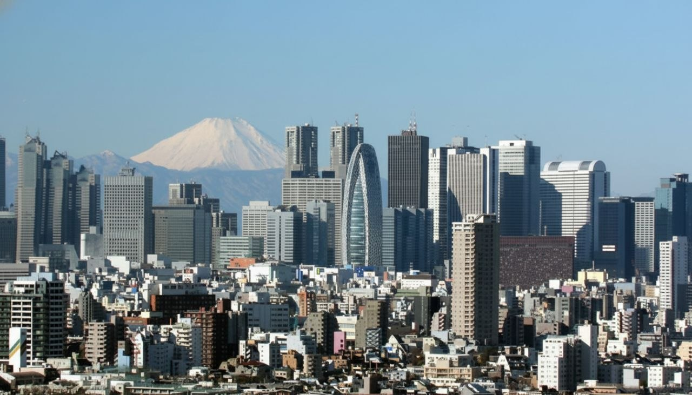
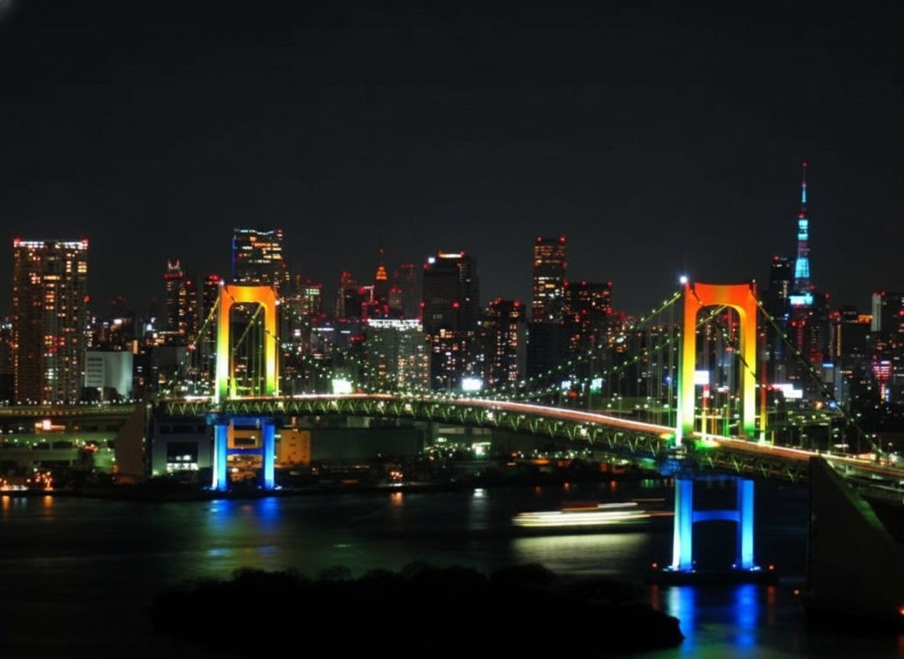
Туристы признаются: от этого города с его словно давящими на мозг высотками и небоскребами и мельтешащей перед глазами неоновой рекламой устаешь так же сильно, как и влюбляешься в него. Порой не проходит и месяца после возвращения домой, как снова хочется окунуться в бурлящую атмосферу Токио и снова устать, чтобы потом вновь соскучиться. И так до бесконечности.
О прошлом столицы Японии можно рассказывать долго и в самых живописных красках, но всей ее богатой на события многовековой истории всё равно не охватить, поэтому остановимся на самых ярких страницах почти 600-летней летописи Токио.
Датой основания города считается 1457 год, когда на его месте был построен самурайский замок Эдо, название которого переводится как «вход в залив». Весьма удобное расположение на равнине и на пересечении торговых путей, недалеко от залива, удобного для строительства портов, поспособствовало развитию поселения, впоследствии возникшего вокруг замка. Полутора веков хватило, чтобы город обрел большую значимость, за рамки регионального центра, однако, пока не выходя.
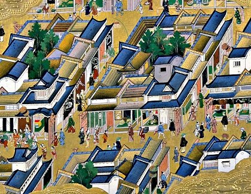
Превращение Эдо – населенный пункт тогда назывался так же, как и крепость – в главный город Японии связано с именем первого сёгуна Иэясу, происходившего из знатного рода Токугава. Свою власть на будущую столицу он распространил в 1590 году и стал весьма влиятельным лицом при дворе. Формально, после императора, он был второй по значимости фигурой на властном Олимпе, фактически же – правителем страны. Иэясу Токугава стал родоначальником целой династии, властвовавшей вплоть до 1867 года. Замок Эдо стал её резиденцией и оставался таковой вплоть до событий, вошедших в японскую историографию как «реставрация Мэйдзи». Во времена первого сёгуна в городе развернулось бурное строительство.
К середине XVIII века Эдо вошел в число крупнейших городов мира. Уже к началу 1790-х годов в нем, включая окрестности, насчитывалось более 1,3 миллиона жителей. Однако портовый статус этого фактически главного города тогдашней Японии использовался слабо, что грозило печальными последствиями национального масштаба. Эдо, да и вся Япония могли оказаться под оккупацией: первым звоночком стал «визит» в 1853-1854 годах американского командора Мэтью Пэрри. С началом так называемой «реставрации Мэйдзи» власти сёгунов из рода Токугава пришел конец, и в жизни страны произошли многие перемены, в результате которых островная империя встала на путь бурного промышленного роста. В 1869 году в Эдо переехал император со всем двором (до этого резиденцией главы государства был Киото), город переименовали в Токио, и он стал полноправной столицей.
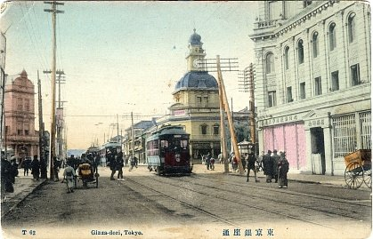
Стремительная индустриализация за считанные десятилетия превратила новую столицу во флагман азиатской экономики. Страшное землетрясение 1923 года, во время которого имели место огромные разрушения и погибло очень много людей, казалось бы, отбросило Токио далеко назад. Только вот неунывающие японцы, привыкшие смотреть только вперед и идти по пути прогресса, быстро восстановили свою столицу. Катастрофические последствия для города имела и Вторая мировая война, точнее, ее завершающий этап. До 1944 года казавшаяся непобедимой Квантунская армия вела успешные боевые действия во всем тихоокеанском регионе. Но потом в войне случился коренной перелом, и над Токио стала кружить американская боевая авиация, сбрасывая на город смертоносные бомбы. В результате погибли сотни тысяч мирных токийцев, оставшиеся в живых укрывались в сельских районах страны.
После войны Токио начал быстро восстанавливаться, став ярчайшим образцом японского экономического чуда, о котором говорят до сих пор. Американцы город разбомбили – они же оказали большую помощь в его восстановлении в рекордные сроки. Заокеанские инвестиции сыграли не последнюю роль в стремительном росте промышленности. Столица Страны восходящего солнца буквально на глазах превратилась в ведущий мировой индустриальный центр – один из крупнейших в мире. Промышленная продукция, производимая здесь, в большинстве своем шла на экспорт.
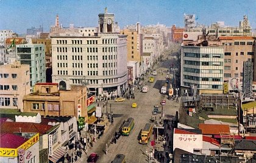
Но ускоренная индустриализация имела и свою обратную сторону – негативную, проявившуюся целым рядом проблем. Впрочем, японцы не были бы японцами, если не смогли бы успешно решить хоть часть из них. В 1964 году Токио принимал у себя XVIII летние Олимпийские игры. Готовясь к грандиозному спортивному событию, токийцы построили сеть современных автобанов, благодаря которым движение на улицах нормализовалось. Высокоскоростная железнодорожная линия, связавшая столицу с Осакой, тоже появилась к Олимпиаде. Она стала прообразом современных магистралей, опоясавших всю страну.
Экономика Токио терпела не только взлеты, но и падения. Серьезным ударом по ней стал топливно-энергетический кризис начала 70-х годов прошлого века. Но, как говорится, нет худа без добра: экономика, встав на новые рельсы, начала подниматься с колен. В Токио большое развитие получили энергосберегающие производства и IT-технологии, а вот так называемая традиционная индустрия стала терять главенствующие позиции. Стало очевидно, что наукоемкие технологии – верный и беспроигрышный путь в будущее, к новым высотам и достижениям.
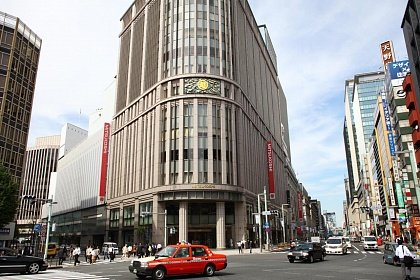
Этот путь развития остается приоритетным для столицы Японии и в XXI веке. В настоящее время Токио – крупнейший финансово-инвестиционный и информационный центр всего постиндустриального мира и безусловная столица «новой Азии». Этот статус в обозримой перспективе вряд ли будет им утрачен.
В отношении Токио часто употребляется эпитет «самый», и вполне заслуженно. О том, что это самый населенный мегаполис планеты, выше мы уже сказали. Добавим, что здесь самое протяженное в мире метро. А еще столица Японии – самая крупная агломерация на Земле по уровню ВВП и самый дорогой город. Только всё это вряд ли отпугнет пытливых путешественников. На самом деле Токио не такой огромный, каким может показаться на первый взгляд, а развитая сеть городского транспорта позволяет без труда по нему перемещаться, знакомясь с интересными достопримечательностями.
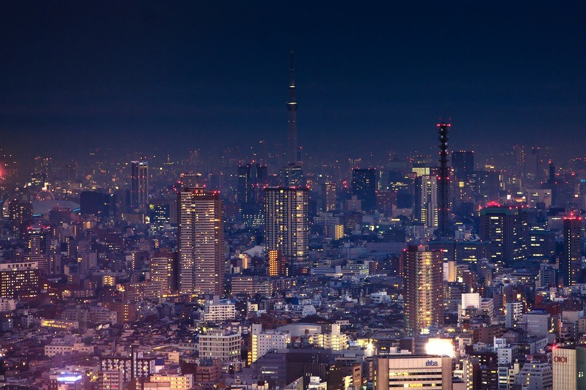
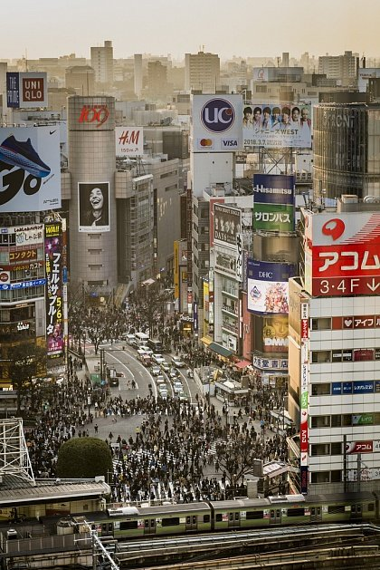
Вспоминая о достопримечательностях Токио, одним из первых в голову приходит район Сибуя, который является своего рода токийским Манхэттеном. Расположенный вокруг одноименного железнодорожного узла, этот квартал давно превратился в главный центр молодежной культуры, моды и бесконечного городского движения. Стоит тут оказаться, как сразу становится понятно, почему Сибуя ассоциируется с пульсом мегаполиса: неоновые вывески, огромные экраны на фасадах зданий и плотные потоки пешеходов создают ту самую энергию, ради которой люди едут сюда из разных концов города.
Знакомство с районом традиционно начинается от памятника собаке Хатико. Этот небольшой бронзовый монумент, расположенный прямо у выхода из метро, давно превратился из простой скульптуры в главную точку сбора. История пса, который на протяжении девяти лет ждал своего умершего хозяина на вокзале, знакома далеко за пределами Японии, поэтому у статуи всегда можно увидеть не только местных жителей, назначающих здесь встречи, но и туристов, желающих отдать дань уважения этой истории преданности. Отсюда же открывается вид на самый известный пешеходный переход в мире.
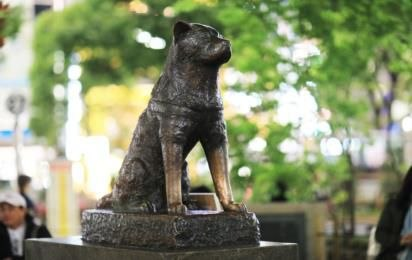
Перекресток Сибуя – это не просто пересечение дорог, а настоящий символ городской суеты. Когда на светофорах загорается зеленый, поток людей одновременно устремляется с разных сторон, заполняя асфальт целиком. Такое зрелище привлекает множество взглядов, и лучшая смотровая точка для него находится на втором этаже здания Starbucks напротив. Оттуда хорошо видно, как тысячи людей, словно по команде невидимого дирижера, расходятся в разных направлениях, чтобы через несколько минут вновь собраться на тротуарах в ожидании следующего цикла.
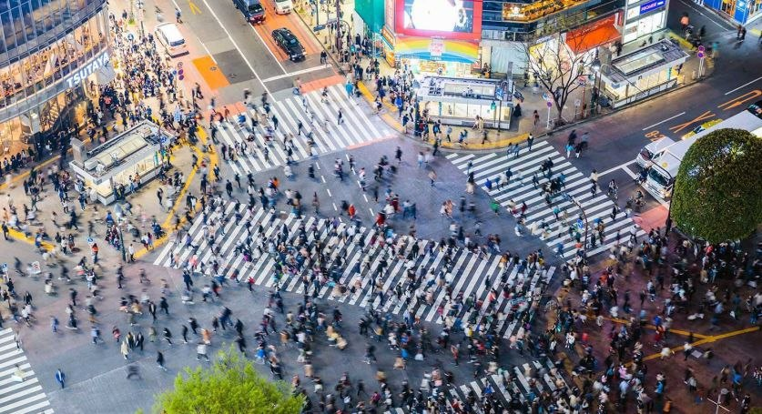
Еще одна важная достопримечательность района – торговый центр Shibuya 109. Это здание цилиндрической формы, расположенное прямо за спиной у памятника Хатико, давно стало символом японской уличной моды. Внутри на нескольких этажах расположены десятки бутиков, ориентированных в первую очередь на молодежную аудиторию. Именно отсюда в свое время расходились по всей стране тренды, определявшие облик токийских модников. Сегодня Shibuya 109 продолжает оставаться местом, где можно увидеть актуальные направления стиля, а сам процесс шопинга здесь превращен в своеобразное шоу с участием продавцов-консультантов, которые выглядят как настоящие звезды глянцевых журналов.
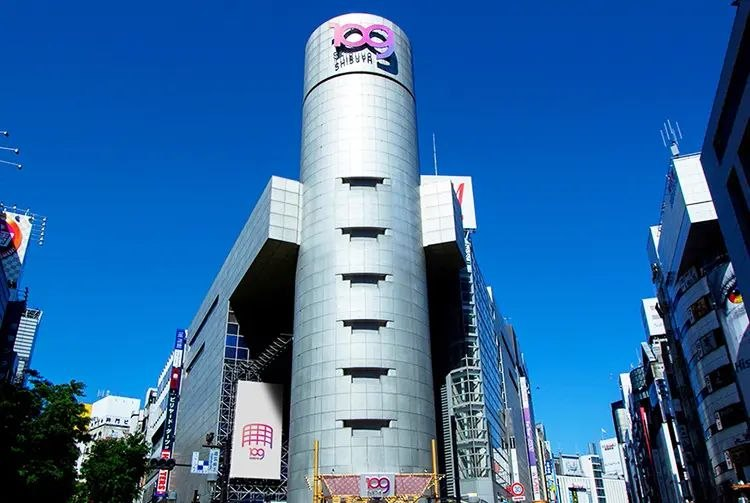
В последние годы главной архитектурной доминантой района стал комплекс Shibuya Scramble Square, на верхних этажах которого расположилась смотровая площадка Shibuya Sky. Она находится на высоте 229 метров и предлагает посетителям панорамный обзор на весь город. В отличие от закрытых обзорных галерей, большая часть пространства здесь организована на открытой крыше, где можно в полной мере ощутить масштаб мегаполиса. Стеклянный угол, выступающий над пропастью, позволяет увидеть перекресток Сибуя прямо под ногами, а в ясную погоду с площадки открывается вид на гору Фудзи. Особенно популярно посещение Shibuya Sky в вечерние часы, когда закатное небо постепенно темнеет и миллионы городских огней зажигаются внизу, создавая эффект бесконечного светящегося пространства.
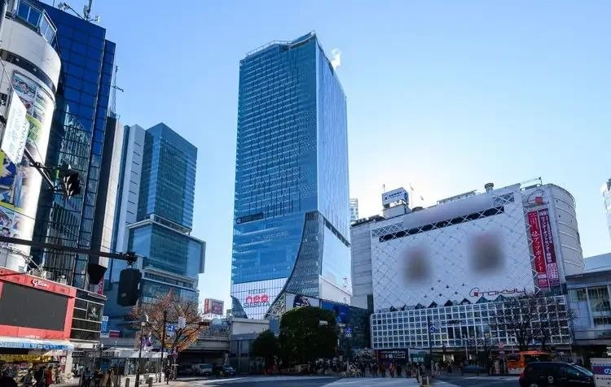
Сибуя переживает второе рождение. Старые здания сносят, строят новые небоскребы, но дух места остается. Не пытайтесь объехать все на такси — здесь все познается пешком. Наденьте самую удобную обувь, возьмите с собой пустую суику-карту и просто потеряйтесь в толпе.
А теперь переместимся в другой, не менее известный, веселый и шумный районов Токио – Гинзу. Его название переводится как «монета» и он действительно на слуху у туристов. Стоит тут оказаться, как сразу становится понятно, насколько такое название подходит этому кварталу. Магазинов здесь бесчисленное количество, имеются популярные торговые центры, не говоря уже о кафе, ресторанах и клубах, цены в которых порой неоправданно завышены. Другими словами, Гинза словно специально создана для того, чтобы в вашем кошельке не задерживались деньги и перекочевывали в карманы владельцев всех этих торговых и развлекательных заведений. А получил же свое название квартал благодаря Монетному двору, где с XVII по XIX век чеканились японские серебряные монеты.
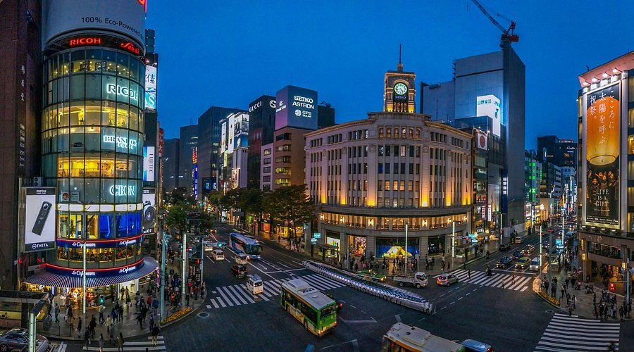
Главной улицей Гинзы является наполовину пешеходная Чуо. Движение по ней перекрывается с 14:00 до 17:00 по субботам и с 12:00 до 17:00 по воскресеньям. Одним из самых известных строений квартала является построенная в 1932 году башня Гинза-Вако, помещения которой занимают бутики с разнообразным ассортиментом и ювелирные магазины. Гинза известна и как место, где находится штаб-квартира флагмана мировой электроники – компании Sony. Увидеть последние модели телевизоров, фотоаппаратов и игровых приставок и познакомиться с новейшими разработками можно в многочисленных выставочных залах компании.
В самом сердце Гинзы находится популярный театр Кабуки-дза – один из самых необычных в мире, ставший для японцев предметом национальной гордости. Для этой умной нации названный храм Мельпомены стал настоящим эталоном, и что именно в нем так их цепляет, сказать трудно: возможно, богатые костюмы, а может – витиеватая смысловая нагрузка спектаклей или даже «сумасшедший» грим актеров. Театр рассчитан на 1964 зрителя, но билеты стоит покупать заранее, так как мест может не оказаться.
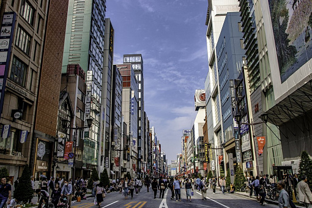
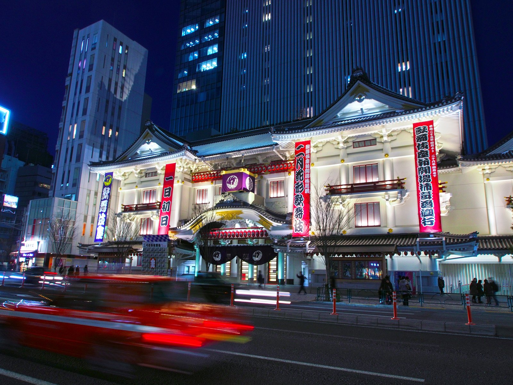
Одной из визитных карточек Токио является дворец императора Японии, расположенный в центре города и утопающий в густой зелени. Дворцовый комплекс, занимающий 7,5 км², со всех сторон окружают древние стены, рвы и каналы. Доступ к резиденции главы государства ограничен, если не считать того, что в определенные дни для посещения открывают Восточный парк, построенный в традиционном японском стиле. Экскурсии во внутренний двор дворца без посещения его самого обычно продолжаются 1 час 15 минут и организуются по предварительной записи. Аудиогид «разговаривает» на японском и английском языках. Самое лучшее время для посещения дворца – март-апрель, когда расцветают сакура и слива.
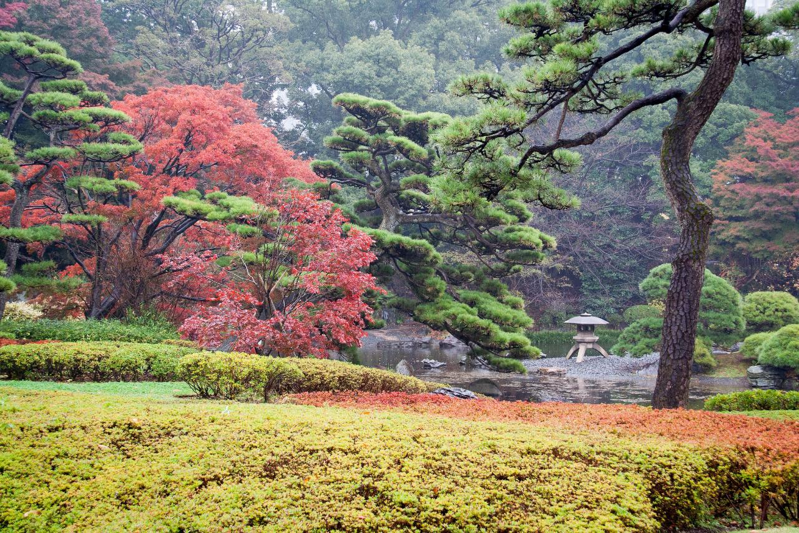
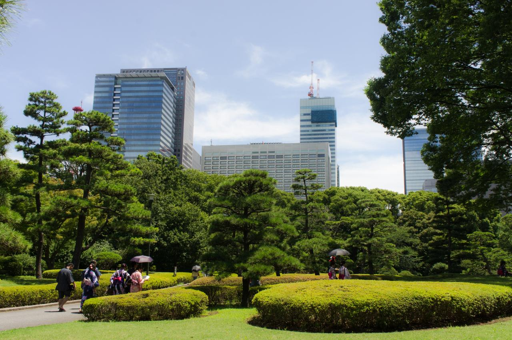
Под строгой охраной находятся личные императорские покои, скрытые от взглядов посторонних. О высоком статусе дворца говорит и то, что под ним запрещено прокладывать метро, а в небе непосредственно над ним не должна летать авиация. Самого императора Нарухито, императрицу Масако и все правящее семейство подданные могут видеть дважды в год: в День рождения императора 23 февраля и 2 января, по случаю наступления Нового года. Августейшие особы приветствуют собравшийся на площади народ с балкона, за пуленепробиваемыми стеклами.
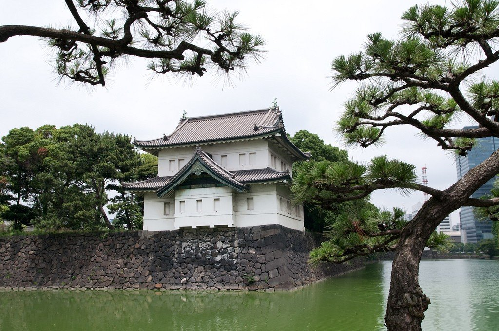
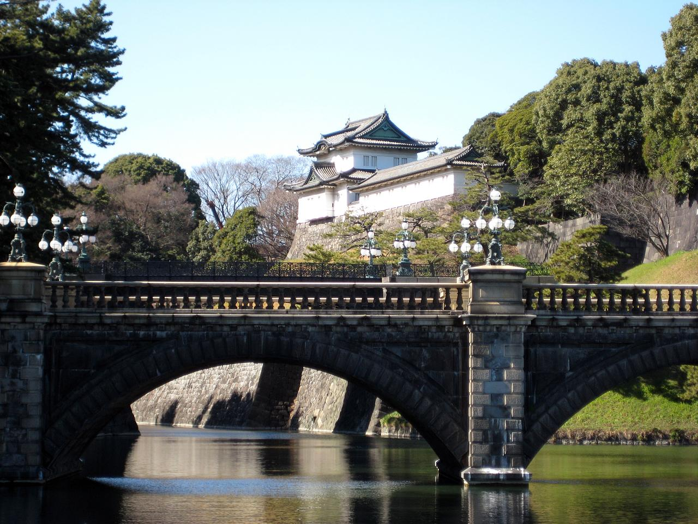
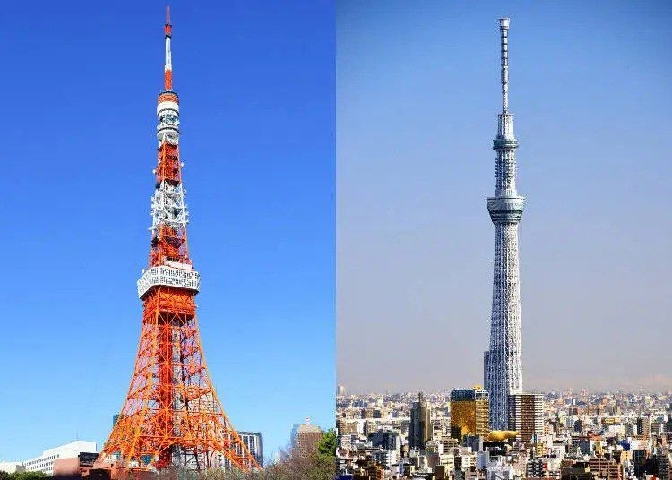
Говоря о символах японской столицы, невозможно пройти мимо двух башен, которые олицетворяют собой два разных лица Токио – уходящую эпоху и устремленный в будущее современный город. Речь идет о старой Телевизионной башне Токио и о новой башне Токийское небесное дерево (Tokyo Skytree).
Токийская башня была построена в 1958 году и до сих пор остается для местных жителей теплым воспоминанием о прошлом. Ее яркий красно-белый каркас создавался по образу парижской Эйфелевой башни, но японские инженеры сделали свое сооружение на 13 метров выше. Поднявшись на смотровые площадки (150 и 250 метров), вы не увидите футуристических стеклянных полов, зато почувствуете дух старого Токио. Особенно красива башня в темное время суток, когда мягкое оранжевое свечение подсветки делает ее похожей на гигантский фонарь.
Токийское небесное дерево открылось в 2012 году в районе Сумида. Его высота составляет 634 метра, что делает башню самой высокой в мире. Смотровые площадки здесь совершенно иного масштаба: 350 и 450 метров. Верхняя представляет собой спиральный пандус, а стеклянные полы и панорамные окна создают эффект полета. В ясную погоду с высоты Skytree видно не только весь Большой Токио, но и гору Фудзи гораздо четче, чем со старой башни.
В чем же разница для туриста? Старая башня – это камерность и ностальгия. Она дешевле, очереди меньше и обстановка уютнее. Новая башня – это хай-тек, толпы туристов и головокружительная высота, ради которой стоит запастись терпением или купить билеты заранее. Обе башни достойны внимания, но каждая хороша в своем контексте: Токийская башня подарит вам атмосферу прошлого, а Tokyo Skytree – захватывающий вид из будущего.
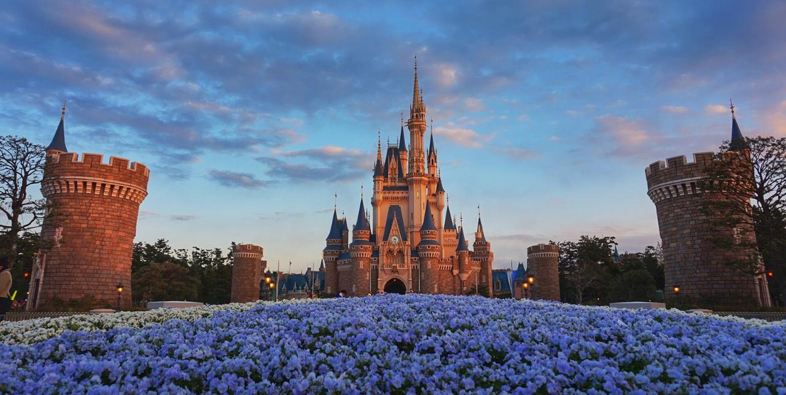
Нескучно будет в Токио и детям, особенно в стенах местного Диснейленда – первого в мире, построенного за пределами Соединенных Штатов. Развлекательный центр тоже относится к популярным визиткам японской столицы. Он расположен в городе Ураясу, раскинувшемся на берегу Токийского залива, и занимает площадь почти в 47 гектаров. В Диснейленде несколько тематических зон: «Страна Фантазий», «Страна Приключений», «Город Мультяшек», «Страна Дикого Запада», «Страна Будущего» и самая маленькая из них – «Страна Зверюшек». В центре развлечений имеется своя развитая туристическая инфраструктура: отели, магазины, рестораны, парковки. Для удобства перемещения между объектами последние соединены между собой монорельсовой железной дорогой. В Диснейленде каждый день вечером можно наблюдать фееричное шествие всех персонажей, и сопровождается это действо музыкой и фейерверк-шоу.
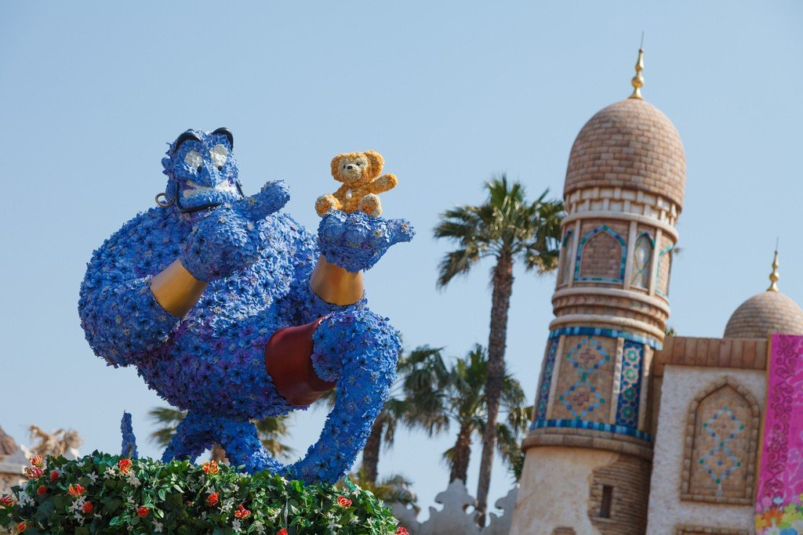
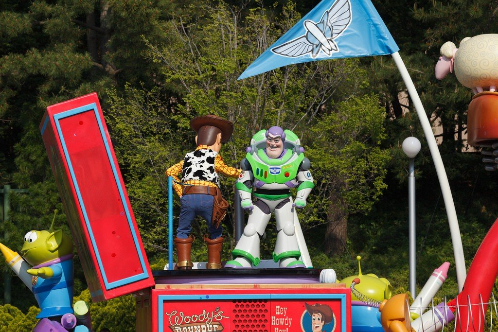
Не только взрослым, но и детям обязательно понравится в музее аниме-студии Ghibli, название которого японцы произносят так: «Джибури». Это одна их крупнейших студий анимационного кино, основанная еще в 1985 году, у ее истоков стоял легендарный Хаяо Миядзаки. Поклонники аниме найдут в стенах заведения всё, от чего встрепенется их сердце, а именно няшных героев с характерными для них большими глазами и кавайными мордочками. Единственное, что расстраивает туристов, так это трудности с удаленным приобретением билетов по почте у международных представителей Ghibli. Остается второй вариант: за несколько дней до запланированной даты посещения музея загляните к билетным автоматам Loppi, которые установлены в магазинчиках Lawson. Если не знаете японского, возьмите с собой проводника. Автомат подскажет, какие дни свободны, и выдаст заветный билетик.
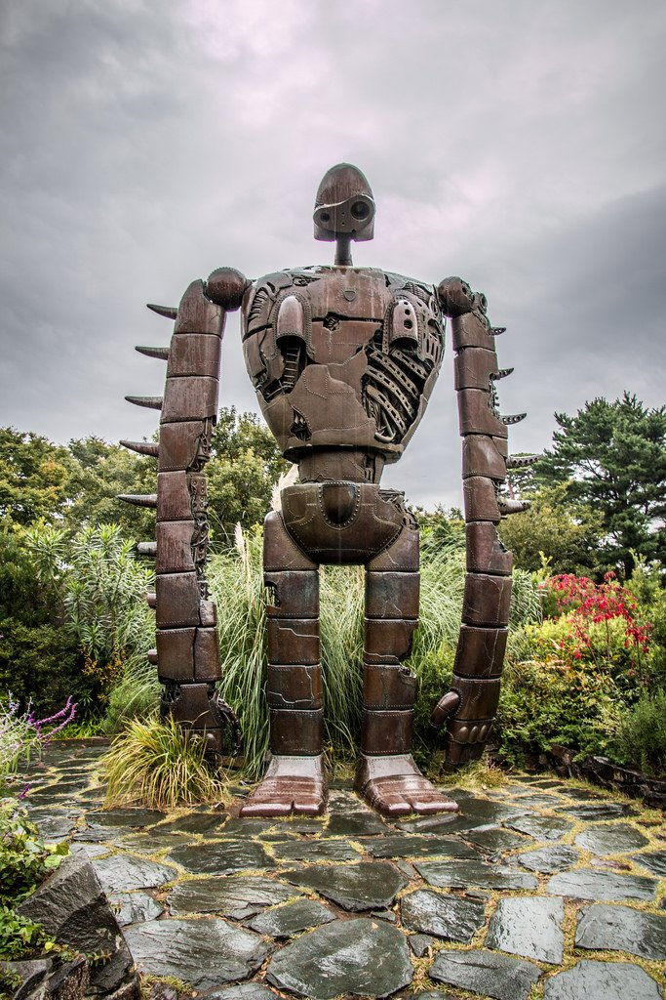
Еще один популярный музей Токио посвящен Маленькому принцу, всемирно известному герою произведения французского писателя Антуана де Сент-Экзюпери. Что ни говори, а японцы действительно удивительная нация: кто бы мог подумать, что им придет в голову создать музей именно этого литературного персонажа, где, кстати, представлены подлинные письма и фотографии автора. При музее даже есть свой парк, экспозиция которого настолько продумана до мелочей, что гулять по нему одинаково приятно и комфортно в любое время года.
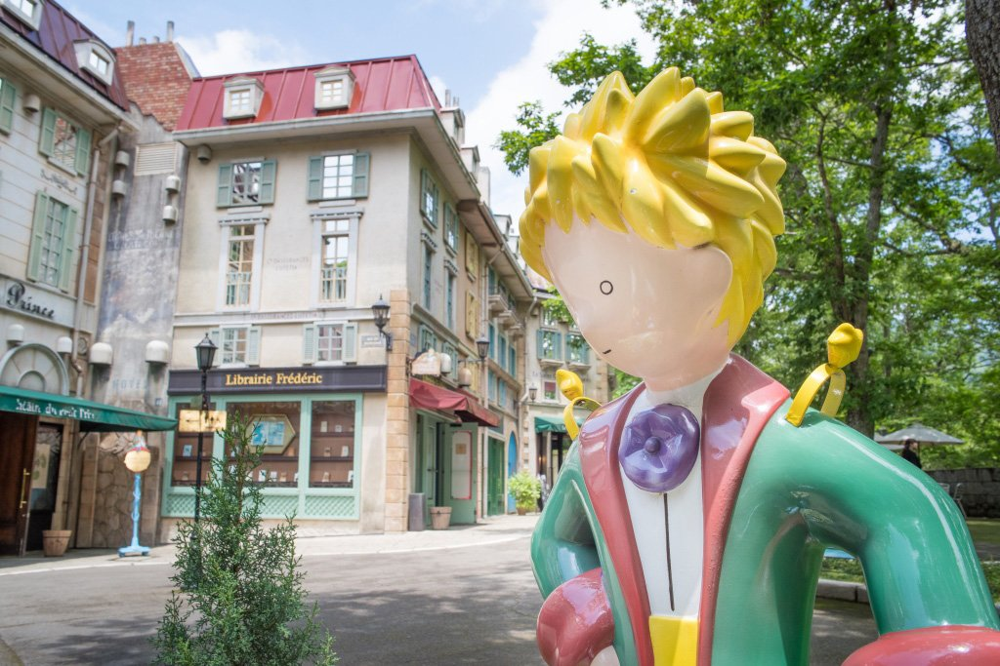
В завершение нашего краткого обзора достопримечательностей Токио приглашаем вас в один из самых известных в Токио храмов Мельпомены, в Национальный театр но. Главным его сокровищем считаются персонажи в масках всех мастей – добрых и страшных, злых и веселых. Во время спектакля им аккомпанируют хор, флейта и барабаны, дополняя и без того впечатляющий эффект от посещения самобытного заведения. Театр но, зародившийся еще в XIV веке, находится в районе Сибуя. В своих постановках, длящихся от 3 до 3,5 часов, он знакомит зрителя с забавными и порой полными трагизма историями из жизни богов, демонов, духов и простых смертных. Среди последних встречаются как буддистские монахи, так и безжалостные убийцы.
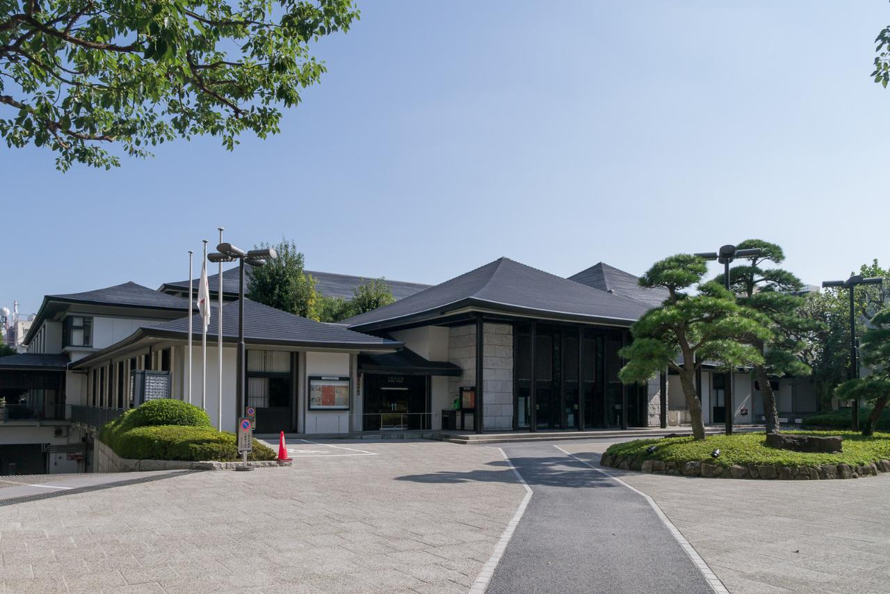
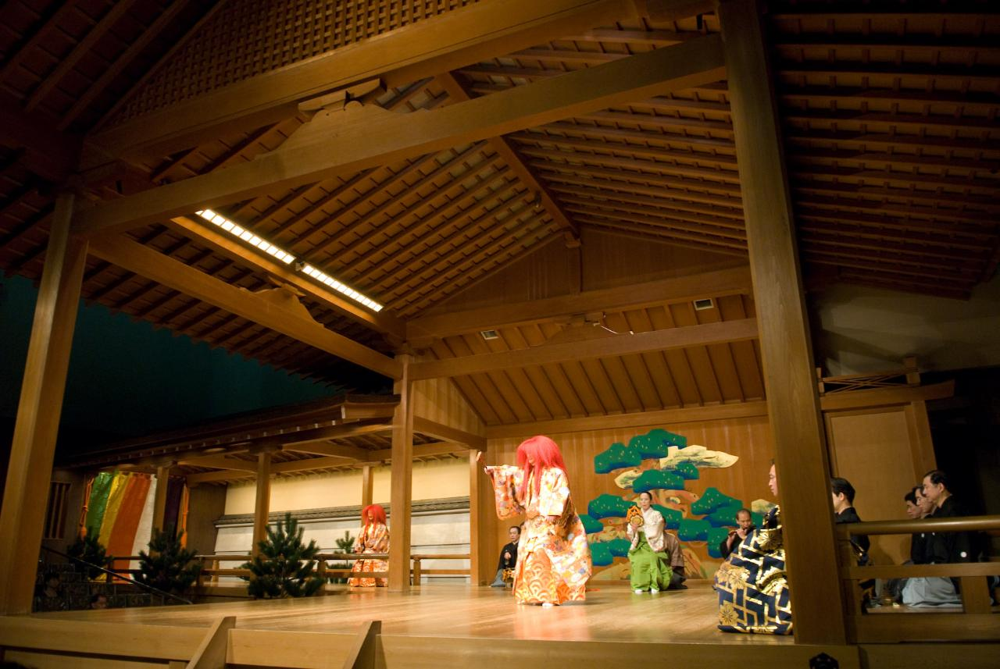
Если вы вообще не знакомы с азиатской кухней и с японской в частности, она может вас на первых порах шокировать. Ведь в основе многих блюд – сырая рыба, какие-то странные водоросли, не говоря уже о прочих обитателях морских глубин, которые едва ли не шевелятся на тарелках – кажется, что не ты их сейчас съешь, а они тебя. Хотя многие вариации на тему японской кухни – суши, роллы и сашими – мы имеем возможность пробовать и у себя в России, однако узнать вкус настоящей японской кухни можно только на ее родине, и Токио открывает в этом плане отличные возможности.
Токио по праву считается столицей суши, и найти здесь место, где подают свежую рыбу, не составит труда. Но главный секрет кроется в разнообразии. В дорогих ресторанах вроде тех что расположены на рынке Тоёсу вам предложат традиционные эдомаэ суши. Это не просто кусочек рыбы на рисе. Рыбу здесь маринуют в соевом соусе, солят или выдерживают, чтобы раскрыть вкус. Попробовать стоит такие необычные виды как анкоу (рыба-удильщик), миругай (гигантский моллюск) или икура (икра лосося) которую здесь подают не горкой а отдельными блестящими шариками. Для более бюджетного знакомства подойдут сети вроде Sushiro или Kura Sushi, где тарелки едут по конвейеру. А если хотите необычного, ищите суши с говядиной вагю или с маринованной скумбрией (симэ-саба). Последнее блюдо редко встречается за пределами Японии и точно заслуживает внимания.
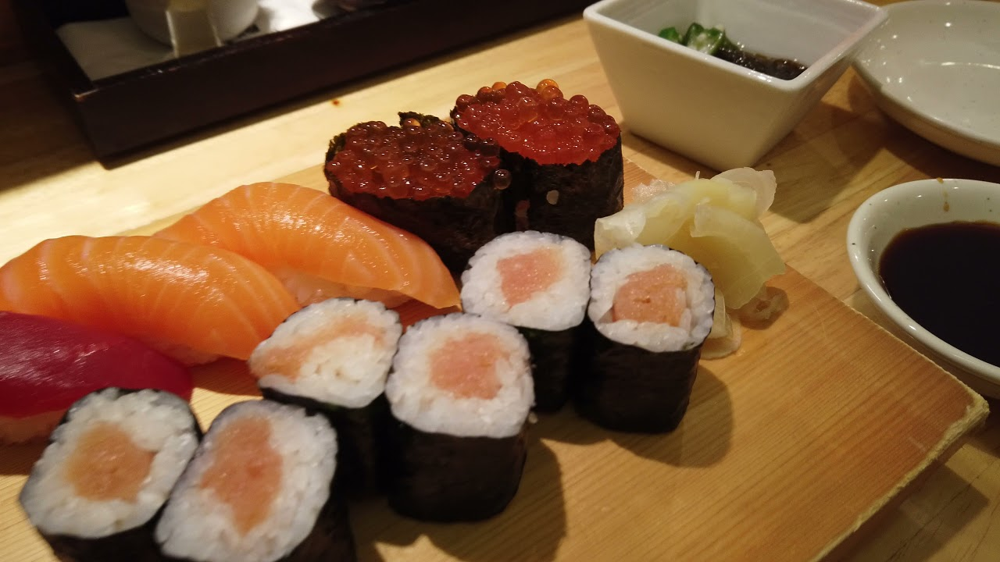
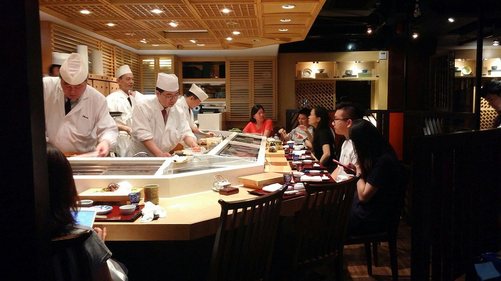
Сладости в Токио – это отдельный вид искусства. Самые известные из них это моти – рисовые лепешки с начинкой. Но моти бывают разными. Классический дайфуку – это мягкий шарик со сладкой пастой из красной фасоли внутри. В летнее время популярен мидзу сиратамa – прозрачные рисовые шарики политые сиропом и посыпанные жареной соевой мукой. Искать моти лучше всего в традиционных кондитерских (вагаси-я) района Асакуса или в универмагах на нижних этажах. Популярная сеть Tsuruya Yoshinobu предлагает сезонные сладости, где начинка меняется в зависимости от месяца. Не пропустите также куса-моти – сладкие рисовые пирожные завернутые в лист сакуры. Они и выглядят красиво и хранятся дольше обычных моти.
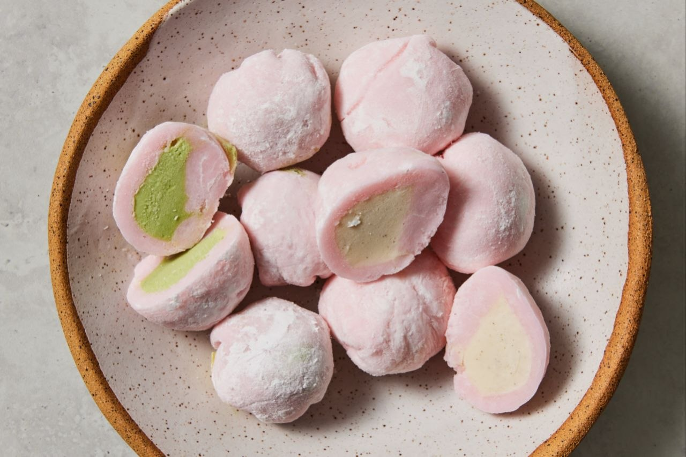
Говоря о других сладостях, которые можно найти в Токио, можно упомянуть еще несколько, помимо моти. Еще одна интересная сладость – вагаси. Это собирательное название для традиционных японских конфет, которые часто подают к чаю. Вагаси делают из растительных компонентов (фасоли, риса, сладкого картофеля) и придают им форму цветов, фруктов или листьев в зависимости от сезона. Некоторые вагаси настолько красивы, что их жалко есть. Также стоит попробовать ёкан – густое сладкое желе из пасты красной фасоли, агара (растительного желатина) и сахара. Ёкан бывает твердым и похожим на плотный батончик или мягким, напоминающим пастилу. Искать вагаси и ёкан, также лучше всего в традиционных кондитерских (вагаси-я) района Асакуса или в универмагах на нижних этажах. Популярная сеть Tsuruya Yoshinobu предлагает сезонные сладости, где начинка меняется в зависимости от месяца. Не пропустите также куса-моти – сладкие рисовые пирожные завернутые в лист сакуры. Они и выглядят красиво и хранятся дольше обычных моти.
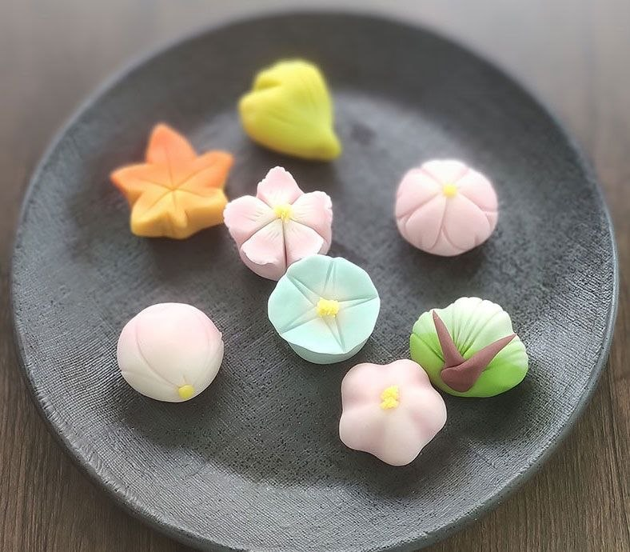
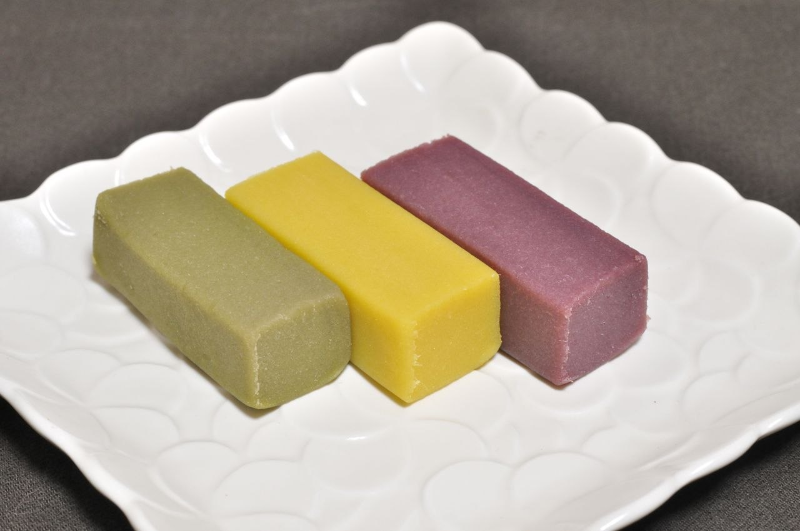
Главное место для знакомства с японской рыбой – это рынок Тоёсу, который пришел на смену легендарному Цукидзи. Сюда привозят тонны свежей рыбы со всей страны. Красная рыба здесь представлена во всем многообразии: жирный лосось (салмон), горбуша (карафуто-масу) и даже дикий кижуч. Но главная звезда рынка – это тунец. Огромные синие тунцы весом под сотню килограммов продаются здесь с аукциона рано утром. Попробовать самую свежую рыбу можно прямо на территории рынка в небольших закусочных. Там вам положат на рис не просто кусок рыбы а вырезку из лучших частей тунца – от постной аками до жирной торо, которая буквально тает во рту. Кстати за красной рыбой лучше идти не в туристические часы, а с утра пораньше.
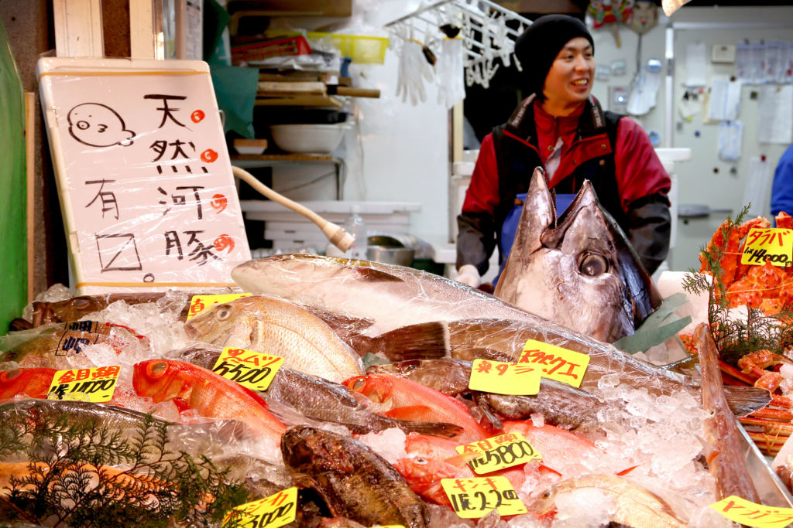
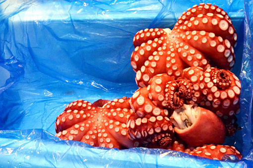
Если суши и рынки – это парадная сторона кухни, то стритфуд и круглосуточные магазины – это ее повседневная душа. На улицах Асакусы или Харадзюку можно перекусить такояки (шарики из теста с осьминогом) или якитори (куриные шашлычки на палочке). Но главное открытие для туриста – это конбини (магазины 7-Eleven, FamilyMart, Lawson). Здесь продают онигири (рисовые треугольники с начинкой) и сэндвичи с яичным салатом, которые по вкусу не уступают ресторанным блюдам. А вечером стоит заглянуть в идзакая – японские питейные заведения. Это не бары в привычном смысле. В идзакая вы сидите за общим столом, заказываете саке или пиво и берете небольшие порции еды к напитку. Тут и эдамамэ (отварные соевые бобы) и караагэ (жареная курица) и сашими. Цены демократичные, а атмосфера максимально живая и ненавязчивая. Это лучший способ попробовать японскую кухню без пафоса и лишних затрат.
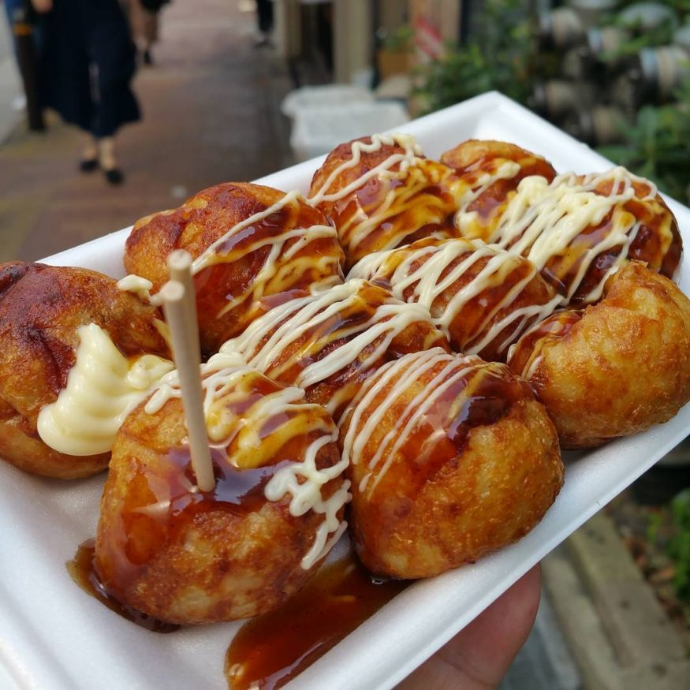
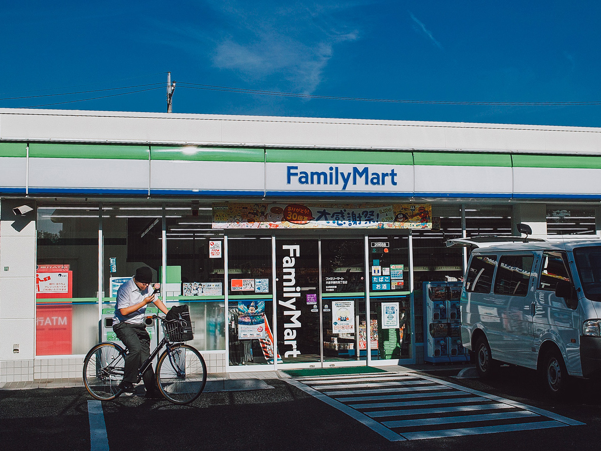
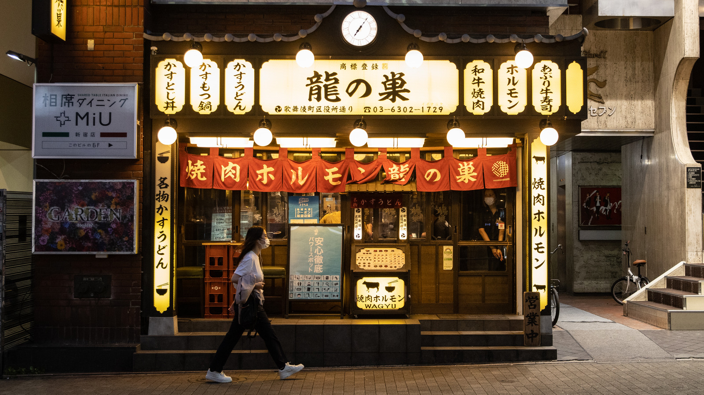
Токийская кухня дружелюбна к новичкам. Начните утро с рынка Тоёсу, в обед зайдите в конбини или суши-конвейер, а вечером отправляйтесь в идзакая. Не гонитесь за звездами Мишлен – в Токио вкусно кормят везде, и даже простой онигири из круглосуточного магазина запомнится вам надолго.